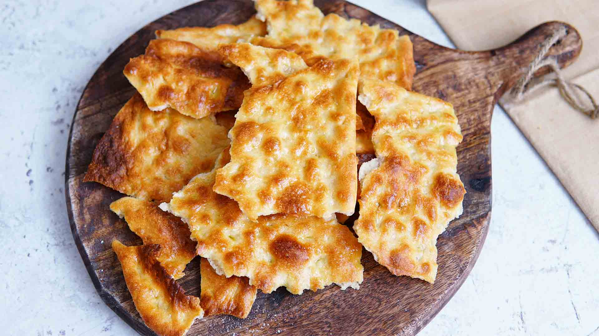

Pizza Scrocchiarella
Ingredienti
- 300 g di farina
- 10 g di sale fino
- 150 ml di acqua
- 100 g di pasta madre
- Q.B. di olio
Preparazione
1. Preparazione dell'Impasto:
- Impasta tutti gli ingredienti fino a ottenere un impasto morbido e omogeneo.
2. Prima Lievitazione:
- Lascia riposare l'impasto in una ciotola coperta per circa 4 ore, fino a che non raddoppia di volume.
3. Formatura dei Panetti:
- Dopo la lievitazione, dividi l'impasto in 8 panetti.
- Stendi ogni panetto sottilmente, formando delle focacce sottili.
4. Condimento:
- Ungi la superficie di ogni focaccia con olio d'oliva e aggiungi una spolverata di sale.
5. Cottura:
- Cuoci in forno preriscaldato a 250°C per 5-7 minuti, fino a che le focacce non diventano dorate e croccanti.